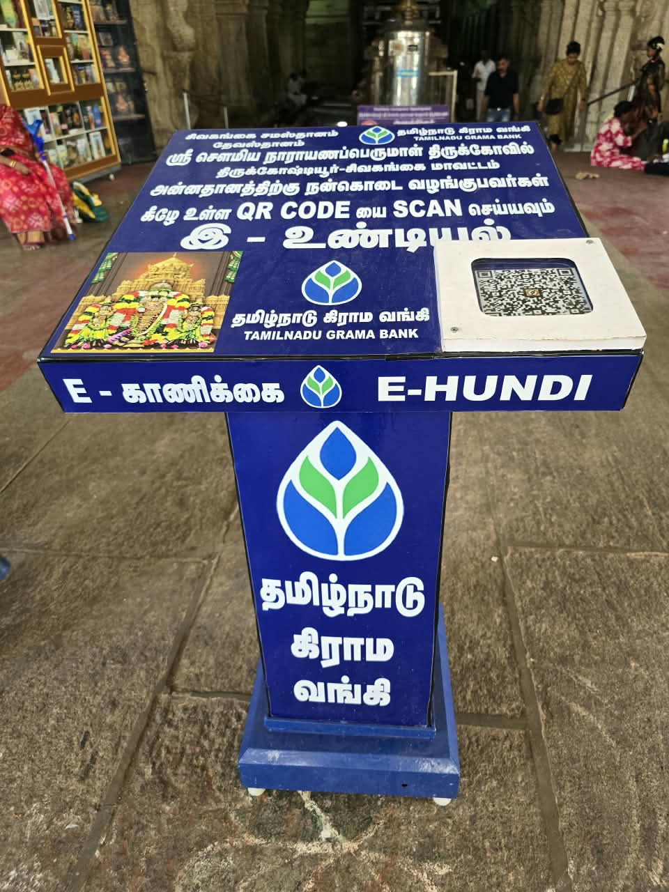
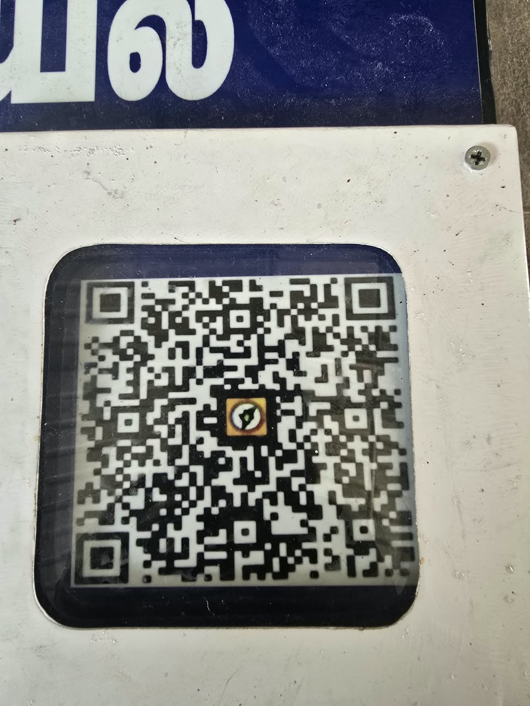
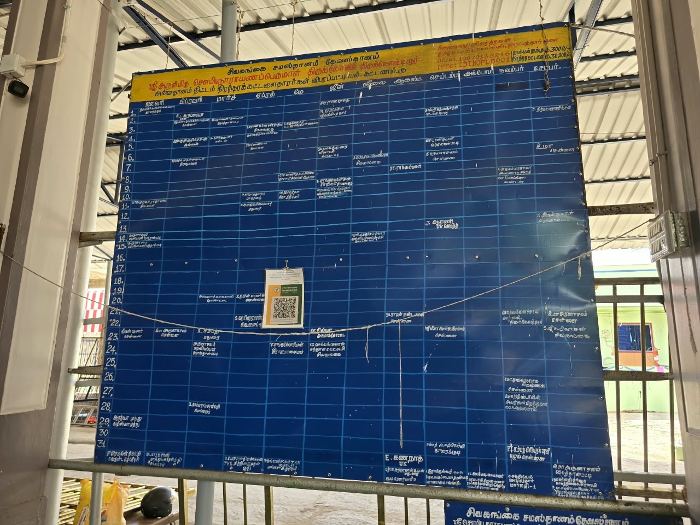

Temple Donation
கோயில் நன்கொடை
Support the Temple Activities & Annadanam
கோயில் நடவடிக்கைகள் மற்றும் அன்னதானத்திற்கு ஆதரவு
Scan QR Code to Donate
நன்கொடை அளிக்க QR குறியீடு ஸ்கேன் செய்யவும்

Donation QR Code
நன்கொடை QR குறியீடு
Scan to donate via UPI
UPI மூலம் நன்கொடை செய்ய

Zoomed QR Code
பெரிதாக்கப்பட்ட QR குறியீடு
Same as above - zoomed for easy scanning
மேலே உள்ளதைப் போலவே - எளிதாக ஸ்கேன் செய்ய பெரிதாக்கப்பட்டது
Bank Details for Direct Transfer
நேரடி பரிமாற்றத்திற்கான வங்கி விவரங்கள்
📝 Important Note
📝 முக்கிய குறிப்பு
After making the donation, please send your receipt/transaction details to our email: info@thirukoshtiyur.com. Also inform to temple office.
நன்கொடை செய்த பிறகு, உங்கள் ரசீது/பரிவர்த்தனை விவரங்களை எங்கள் மின்னஞ்சலுக்கு அனுப்பவும்: info@thirukoshtiyur.com. மேலும் கோயில் அலுவலகத்தில் தெரிவிக்கவும்.
🍚 Annadanam - Sacred Food Service
🍚 அன்னதானம் - புனித உணவு சேவை
Your contribution is invaluable!
Help us feed devotees who visit our temple. Annadanam is considered one of the most sacred services.
Every grain donated is a blessing multiplied. Join us in this noble cause.
உங்கள் பங்களிப்பு விலைமதிப்பற்றது!
எங்கள் கோயிலுக்கு வரும் பக்தர்களுக்கு உணவளிக்க எங்களுக்கு உதவுங்கள். அன்னதானம் மிகவும் புனிதமான சேவைகளில் ஒன்றாக கருதப்படுகிறது.
தானமாக வழங்கப்படும் ஒவ்வொரு தானியமும் பன்மடங்கு ஆசீர்வாதம். இந்த உன்னத காரியத்தில் எங்களுடன் சேருங்கள்.

🙏 Reserve Your Place for Annadanam
🙏 அன்னதானத்திற்கு உங்கள் இடத்தை முன்பதிவு செய்யுங்கள்
Limited slots available. Book your Annadanam service and be part of this divine offering.
Contact us for sponsorship details and available dates.
குறைவான இடங்கள் உள்ளன. உங்கள் அன்னதான சேவையை முன்பதிவு செய்து இந்த தெய்வீக காணிக்கையின் ஒரு பகுதியாக இருங்கள்.
ஸ்பான்சர்ஷிப் விவரங்கள் மற்றும் கிடைக்கும் தேதிகளுக்கு எங்களை தொடர்பு கொள்ளவும்.